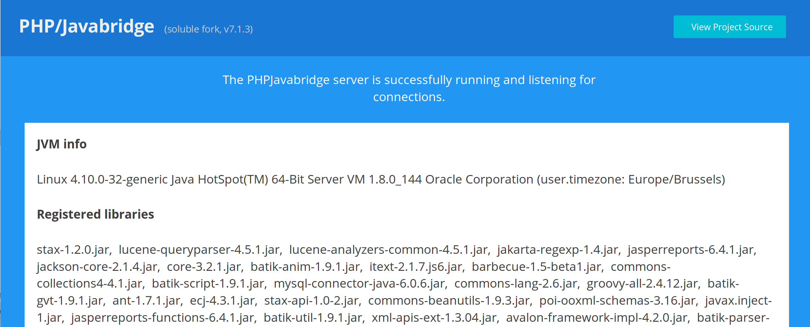

soluble-jasper¶


PDF report generation with jasper reports for PHP.
Note:
PDF generation from pure-PHP or even chrome based approaches works great. They are the way to go but for some specific reports, I could not find a proper solution...
The jasper way is quite popular amongst Java developers and I used in few situations like complex invoices, barcode track labels or product specs with success both in terms of reliability and speed.
Consider this library as one more alternative for pdf reporting from PHP. The drawback, and yes there's one big: it requires to install a java server (tomcat) that is reachable from the PHP side (a bridge - see soluble-japha)
For now I'm trying to gather comments or ideas on this
Please share your thoughts... I'll read and reply if you have any question. Consider this as an experiment ;)
If there's enough interest I will provide a proper documentation. In the meantime check the examples below to get a glimpse of how it works.
Some interesting link: - jasper studio - e2e/functional tests examples
Features¶
- Report generation in PDF (other formats can be supported, open an issue)
- Datasources for JDBC, JSON and XML (url or filesystem)
- Support for PSR-7 responses (stream)
Requirements¶
- PHP 7.1+
- PHPJasperBridge (see install)
- Java
Dependencies¶
- soluble-japha client for communication with the jasper bridge
Examples¶
Creating a new report¶
<?php declare(strict_types=1); use Soluble\Japha\Bridge\Adapter as JavaBridgeAdapter; use Soluble\Jasper\{ReportRunnerFactory, Report, ReportParams}; use Soluble\Jasper\DataSource\JavaSqlConnection; use Soluble\Jasper\Exporter\PDFExporter; // Step 1: Get the report runner // Good practice is to initialize once and get it from a PSR-11 compatible container $bridgeAdapter = new JavaBridgeAdapter([ 'servlet_address' => 'localhost:8080/JasperReports/servlet.phpjavabridge' ]); $reportRunner = ReportRunnerFactory::getBridgedReportRunner($bridgeAdapter); // Step 2: Define your report parameters $report = new Report( '/path/my_report.jrxml', new ReportParams([ 'BookTitle' => 'Soluble Jasper', 'BookSubTitle' => 'Generated on JVM with Jasper reports' ]), new JavaSqlConnection( 'jdbc:mysql://localhost/my_db?user=user&password=password', 'com.mysql.jdbc.Driver' ) ); // Step 3: Export the report $pdfExporter = new PDFExporter($report, $reportRunner); $pdfExporter->saveFile('/path/my_report_output.pdf', [ 'author' => 'John Doe', 'title' => 'My document' ]); // Or for PSR7 response $response = $pdfExporter->getPsr7Response([ 'author' => 'John Doe', 'title' => 'My document' ]); //$exportManager = $reportRunner->getExportManager($report); //$exportManager->savePdf('/path/my_report_output.pdf'); /* $pdfExporter = $exportManager->getPdfExporter(); $pdfExporter->saveFile('/path/my_report_output.pdf'); // Both will need to cache the report $psr7Response = $pdfExporter->getPsr7Response(); $stream = $pdfExporter->getStream(); */
Datasources¶
Jasper reports supports multiple datasources for filling the report (see JRApi)
JavaSqlConnection¶
Example using JavaSqlConnection:
<?php declare(strict_types=1); use Soluble\Jasper\DataSource\JavaSqlConnection; $dataSource = new JavaSqlConnection( 'jdbc:mysql://server_host/database?user=user&password=password', 'com.mysql.jdbc.Driver' );
Tip
For convenience you can also use the JdbcDsnFactory to convert
database params.
<?php declare(strict_types=1); use Soluble\Jasper\DataSource\Util\JdbcDsnFactory; $dbParams = [ 'driver' => 'mysql', // JDBC driver key. 'host' => 'localhost', 'db' => 'my_db', 'user' => 'user', 'password' => 'password', // Optional extended options 'driverOptions' => [ 'serverTimezone' => 'UTC' ] ]; $dsn = JdbcDsnFactory::createDsnFromParams($dbParams); // You should get a jdbc formatted dsn: // 'jdbc:mysql://localhost/my_db?user=user&password=password&serverTimezone=UTC' // ready to use as $dsn argument for `JdbcDataSource`
JsonDataSource¶
Example using JsonDataSource:
<?php declare(strict_types=1); use Soluble\Jasper\{ReportRunnerFactory, Report, ReportParams}; use Soluble\Jasper\DataSource\JsonDataSource; $jsonDataSource = new JsonDataSource('<url_or_path>/northwind.json'); /* $jsonDataSource->setOptions([ JsonDataSource::PARAM_JSON_DATE_PATTERN => 'yyyy-MM-dd', JsonDataSource::PARAM_JSON_NUMBER_PATTERN => '#,##0.##', JsonDataSource::PARAM_JSON_TIMEZONE_ID => 'Europe/Brussels', JsonDataSource::PARAM_JSON_LOCALE_CODE => 'en_US' ]); */ $report = new Report( '/path/myreport.jrxml', new ReportParams([ 'LOGO_FILE' => '/path/assets/wave.png', 'TITLE' => 'My Title' ]), $jsonDataSource); $reportRunner = ReportRunnerFactory::getBridgedReportRunner($this->ba); $exportManager = $reportRunner->getExportManager($report); $exportManager->savePdf('/path/my_output.pdf');
XmlDataSource¶
Example using XmlDataSource:
<?php declare(strict_types=1); use Soluble\Jasper\{ReportRunnerFactory, Report, ReportParams}; use Soluble\Jasper\DataSource\XmlDataSource; $xmlDataSource = new XmlDataSource('<url_or_path>/northwind.xml'); /* $xmlDataSource->setOptions([ XmlDataSource::PARAM_XML_DATE_PATTERN => 'yyyy-MM-dd', XmlDataSource::PARAM_XML_NUMBER_PATTERN => '#,##0.##', XmlDataSource::PARAM_XML_TIMEZONE_ID => 'Europe/Brussels', XmlDataSource::PARAM_XML_LOCALE_CODE => 'en_US' ]); */ $report = new Report( '/path/myreport.jrxml', new ReportParams([ 'LOGO_FILE' => '/path/assets/wave.png', 'TITLE' => 'My Title' ]), $xmlDataSource); $reportRunner = ReportRunnerFactory::getBridgedReportRunner($this->ba); $exportManager = $reportRunner->getExportManager($report); $exportManager->savePdf('/path/my_output.pdf');
Logging¶
You can enable any psr/log compatible logger. Here's a basic example with monolog:
<?php use Soluble\Japha\Bridge\Adapter as JavaBridgeAdapter; use Soluble\Jasper\{ReportRunnerFactory, Report, ReportParams}; use Monolog\Logger; use Monolog\Handler\StreamHandler; $logger = new Logger('soluble-japha-logger'); $logger->pushHandler(new StreamHandler('path/to/your.log', Logger::WARNING)); $bridgeAdapter = new JavaBridgeAdapter([ 'servlet_address' => 'localhost:8080/JasperReports/servlet.phpjavabridge' ]); $reportRunner = ReportRunnerFactory::getBridgedReportRunner($bridgeAdapter, $logger); $report = new Report('/path/my_report.jrxml', new ReportParams()); // Any exception during report compilation, filling or exporting will // be logged ;)
Exceptions¶
When running or exporting a report, the following exception can be thrown:
Generally at compile time:
| Exception | Description |
|---|---|
ReportFileNotFoundException |
When the report file cannot be opened (PHP or Java side, check perms) |
BrokenXMLReportFileException |
When the report JRXML file cannot be parsed (xml error) |
ReportCompileException |
Compilation error, generally an invalid expression or missing resource |
JavaProxiedException |
Exception on the Java side, and call $e->getJvmStackTrace() for debug |
RuntimeException |
Normally never thrown, see exception message |
At filling time:
| Exception | Description |
|---|---|
BrokenJsonDataSourceException |
When the json datasource cannot be parsed |
JavaProxiedException |
Exception on the Java side, and call $e->getJvmStackTrace() for debug |
Installation¶
This project requires a java server (or service) running on the same machine that will expose the jasper API to the php side (network bridge).
Check the installation example below or a more complex doc here.
JasperBridge¶
Build a war file
# Example based on php-java-bridge master $ git clone https://github.com/belgattitude/php-java-bridge.git $ cd php-java-bridge $ ./gradlew war -I init-scripts/init.jasperreports.gradle -I init-scripts/init.mysql.gradle
Deploy on Tomcat (example on ubuntu sudo apt install tomcat8)
$ sudo cp ./build/libs/JavaBridgeTemplate.war /var/lib/tomcat8/webapps/JasperReports.war
Wait few seconds and point your browser to http://localhost:8080/JasperReports, you should see the php-java-bridge dashboard page.

The bridge address can be used in the japha bridge adapter:
<?php declare(strict_types=1); use Soluble\Japha\Bridge\Adapter; $ba = new Adapter([ 'driver' => 'Pjb62', 'servlet_address' => 'localhost:8080/JasperReports/servlet.phpjavabridge' ]); // This should print your JVM version echo $ba->javaClass('java.lang.System')->getProperty('java.version');
If you encounter permissions problems (i.e. the pdf are created under tomcat8 user), just add your user to the tomcat group:
$ sudo usermod -a -G <tomcat group name> <username>
Benchmarks¶
Early benchmarks for common operation (run on a laptop for now, will do soon on digitalocean). See tests/bench/simple_benchmarks.php.
Jasper compile time and filling (internal)¶
| Benchmark name | x1 | x5 | x10 | Average | Memory |
|---|---|---|---|---|---|
| 00_report_mini.jrxml (compile) | 43.03ms | 179.05ms | 347.55ms | 35.60ms | 18.97Kb |
| 00_report_mini.jrxml (fill) | 3.19ms | 9.15ms | 18.58ms | 1.93ms | 14.27Kb |
| 01_report_default.jrxml (compile) | 39.24ms | 192.41ms | 338.65ms | 35.64ms | 0.31Kb |
| 01_report_default.jrxml (fill) | 3.70ms | 11.22ms | 22.75ms | 2.35ms | 0.44Kb |
PDF exports¶
| Benchmark name | x1 | x5 | x10 | Average | Memory |
|---|---|---|---|---|---|
| 00_report_mini.jrxml (text-only) | 38.74ms | 3.76ms | 8.58ms | 3.19ms | 0.79Kb |
| 01_report_default.jrxml (text+png) | 318.68ms | 1,365.02ms | 2,709.56ms | 274.58ms | 0.75Kb |
| 06_report_barcodes.jrxml (barcodes) | 123.81ms | 323.71ms | 630.51ms | 67.38ms | 0.75Kb |
- Connection time: 3 ms